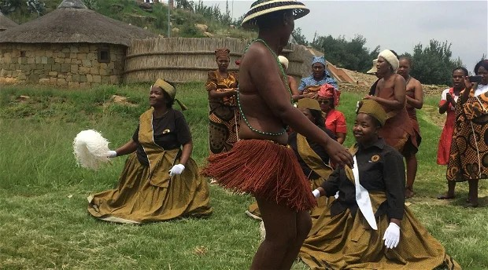
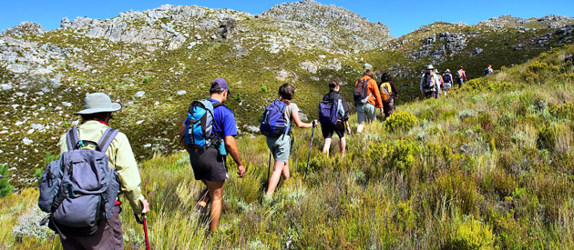

Festival Schedule |
||||
| Home | About | Programme | Tickets | Contact |
|
The festival runs over three days with different activities each day. The first day begins with an opening ceremony and cultural performances. Visitors are introduced to the history of Thaba Bosiu. The day ends with entertainment and social activities. The second and third days include guided tours, exhibitions, and workshops. Tourists explore the mountain and learn about important historical events. Cultural performances and food experiences are also provided. The schedule ensures a full and enjoyable experience.  Festival activities  Tourists exploring the site |
||||
© 2026 Thaba Bosiu Tourism Festival